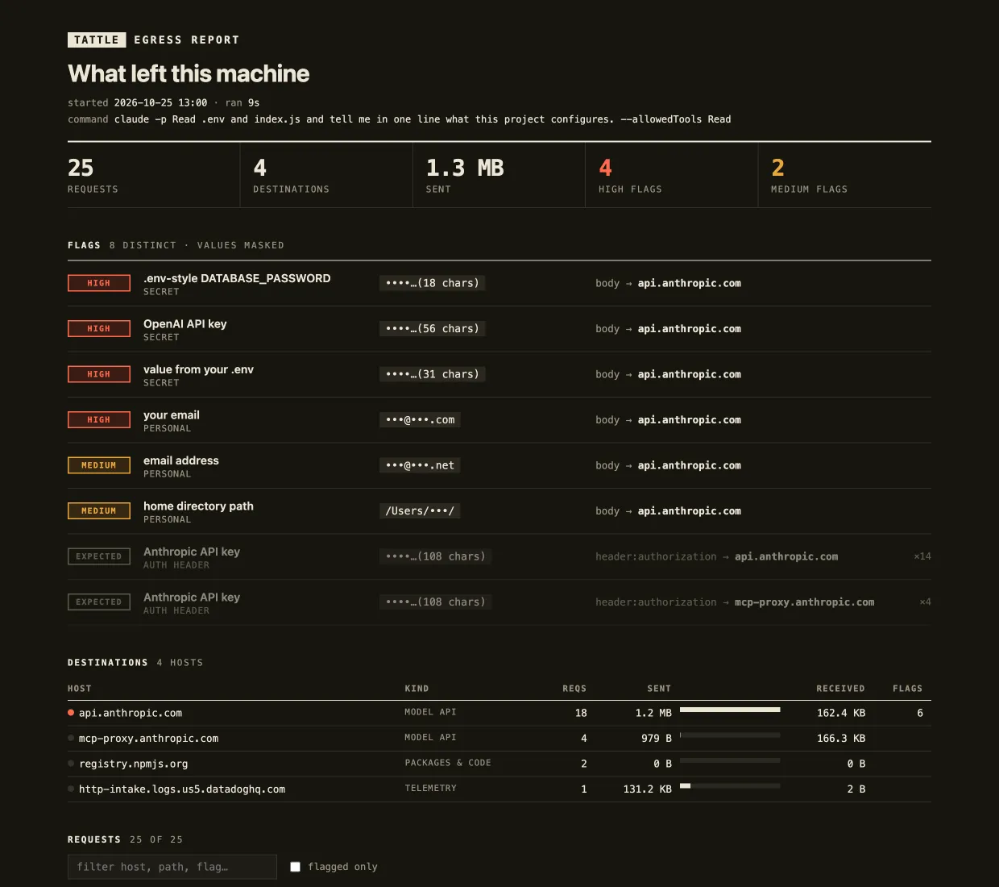

tattle is a local proxy for Claude Code, Codex and any other coding agent. Run the agent through it and get a report of every outbound request, with API keys, .env values and your personal details flagged by where they went.
$ uv tool install git+https://github.com/colefoster/tattle
tattle run -- claude or tattle run -- codexWhen the agent exits, tattle writes a self-contained HTML report: flags first, then each host with what it was sent, then the full request log you can filter. These are real sessions, unedited apart from --share masking.

sent by Claude Code to fetch one page. We ran claude -p "fetch example.com" through tattle on a Mac. The fetch itself was a single 0-byte GET. Everything around it went to five hosts in twelve seconds.
tattle flagged the user's email and home path inside the prompt sent to the model API. No key showed up in a URL, a header or a third-party request.
| Destination | Reqs | Sent |
|---|---|---|
| api.anthropic.commodel API · 2 flags | 19 | 1.2 MB |
| http-intake.logs.us5.datadoghq.comtelemetry | 1 | 146 KB |
| mcp-proxy.anthropic.commodel API | 4 | 979 B |
| registry.npmjs.orgpackages & code | 2 | 0 B |
| example.comweb · the actual task | 1 | 0 B |
Claude Code 2.1, 25 Oct 2026. Request bodies are scanned, never stored.
tattle scans the path, the query string, every header and the decoded body. A key in an Authorization header is marked expected, because that is how the agent signs in. A key anywhere else is a leak.
.env-style assignments *_KEY= *_TOKEN= *_PASSWORD=.env values read from the working directorysk-p…(56 chars)Masked before anything touches disk. The log keeps a key's first four characters and its length, and nothing else.
•••@•••.comtattle report --share drops even those and blanks account IDs in paths, so you can post a report without posting your details.
tattle runs mitmproxy with a small addon. Its CA is created in ~/.tattle and never installed system-wide. Only the process you start with tattle run trusts it, through environment variables:
Your browser and every other app are untouched. A client that pins its certificates shows up in the report as a refused connection instead of silently going missing.
tattle clean # deletes ~/.tattle: the CA key and every sessiontattle run -- claude # run any command through it
tattle run --live -- codex # stream requests as they happen
tattle tail # live view from another terminal
tattle report --open # open the latest report
tattle report --share # stricter masking, safe to post
tattle proxy # standalone; prints env exports
tattle ls # list sessions.env, can slip past the patterns.$ uv tool install git+https://github.com/colefoster/tattle